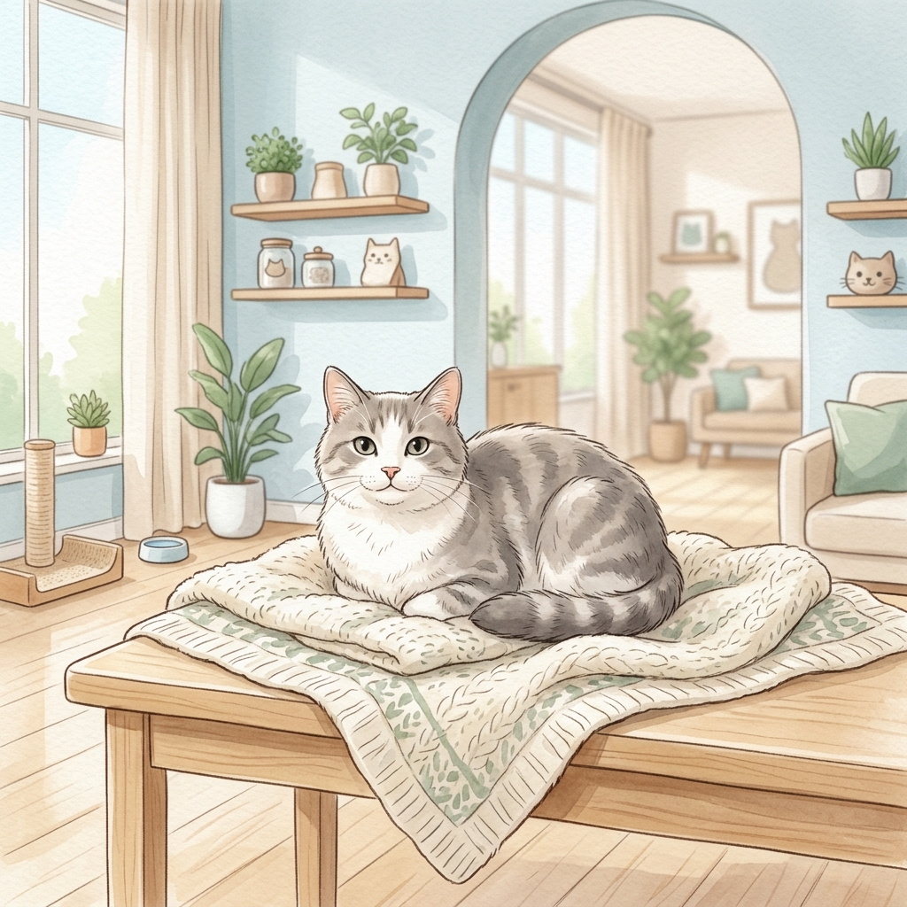

Feline Care Programs
고양이만을 전문적으로 연구한 수의학적 임상 정밀도와 고양이 전용 저자극 환경 설계를 갖춘 맞춤형 치료 모델입니다.
종합 건강 평가
고양이 특화 혈액 검사, 심장 초음파, 그리고 아픔을 숨기는 고양이의 신체적 통증 지표(Feline Grimace Scale) 분석을 포함한 정밀 종합 검진입니다.
정밀 검진
통증 분석
FIV/FeLV
안심 예방 접종
병원 내 낯선 냄새와 소리로 인한 불안 반응을 방지하기 위해 펠리웨이(Feliway) 페로몬 안정이 도입된 저자극 접종 케어 서비스입니다.
종합 접종
펠리웨이 가동
광견병 예방
고양이 특화 치과
고양이에게 빈번히 발생하는 고통스러운 흡수성 병변(FORL)과 난치성 구내염을 디지털 치과 방사선 촬영을 통해 안전하고 세밀하게 케어합니다.
구내염 예방
스케일링
치과 방사선
반려묘의 마음에 공감하는
Gentle Expertise 진료 철학
고양이는 환경의 아주 미세한 변화에도 극심한 스트레스를 겪는 극도로 섬세한 영역 동물입니다. 일반 진료 환경에서 고양이가 느끼는 공포와 불안은 때로 진단 수치까지 비정상적으로 높일 정도로 심각합니다.
Serene Feline Care는 고양이의 감각을 배려한 안락한 저자극 공간 설계와 고양이 전문 행동학 자격증(Feline Friendly)을 취득한 전담 의료진의 1:1 케어를 보증합니다.
- 오직 고양이만을 진료하는 강아지 격리 독립 병동 시스템
- 후각 예민성을 배려한 화학적 알코올 냄새 최소화 및 디퓨징 배제
- 강압적인 보정을 지양하고 오랜 신뢰 형성을 선행하는 정서 케어
🐱🤍🏠
Feline Friendly Gold
세계고양이수의학회(ISFM) 최고 등급 골드 등급 표준 규격을 충족하여 소중한 고양이가 진료 중 내 집과 같은 편안함과 최고의 위생 케어를 제공받음을 보증합니다.
스트레스 없는
진료 예약 신청
방문 전, 반려묘에 대해 알려주시면 담당 의료진이 사전 미팅 자료를 구성하여 아이가 병원에 머무는 시간을 단 1분이라도 더 단축시킬 수 있도록 정밀하게 조율하겠습니다.